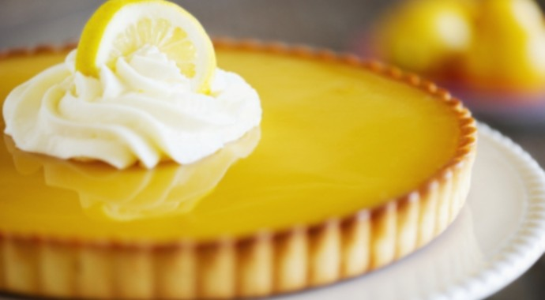
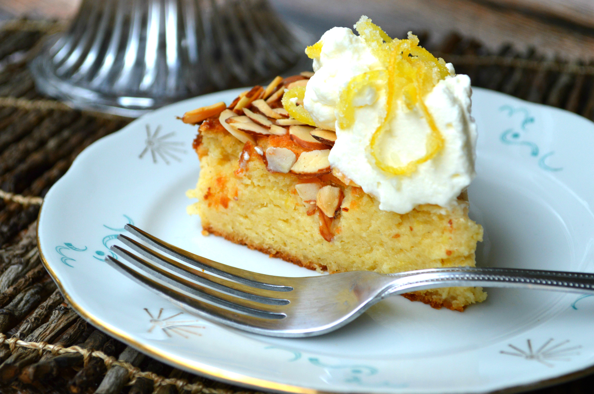
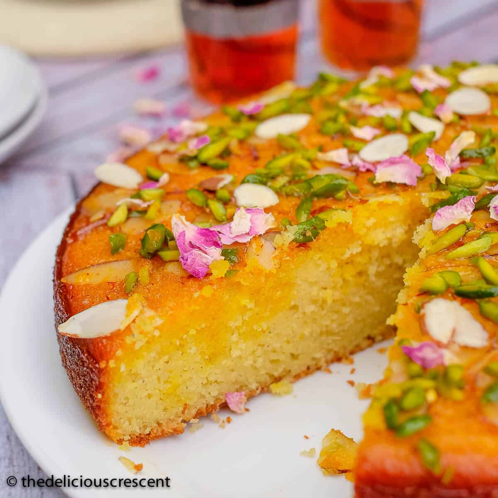
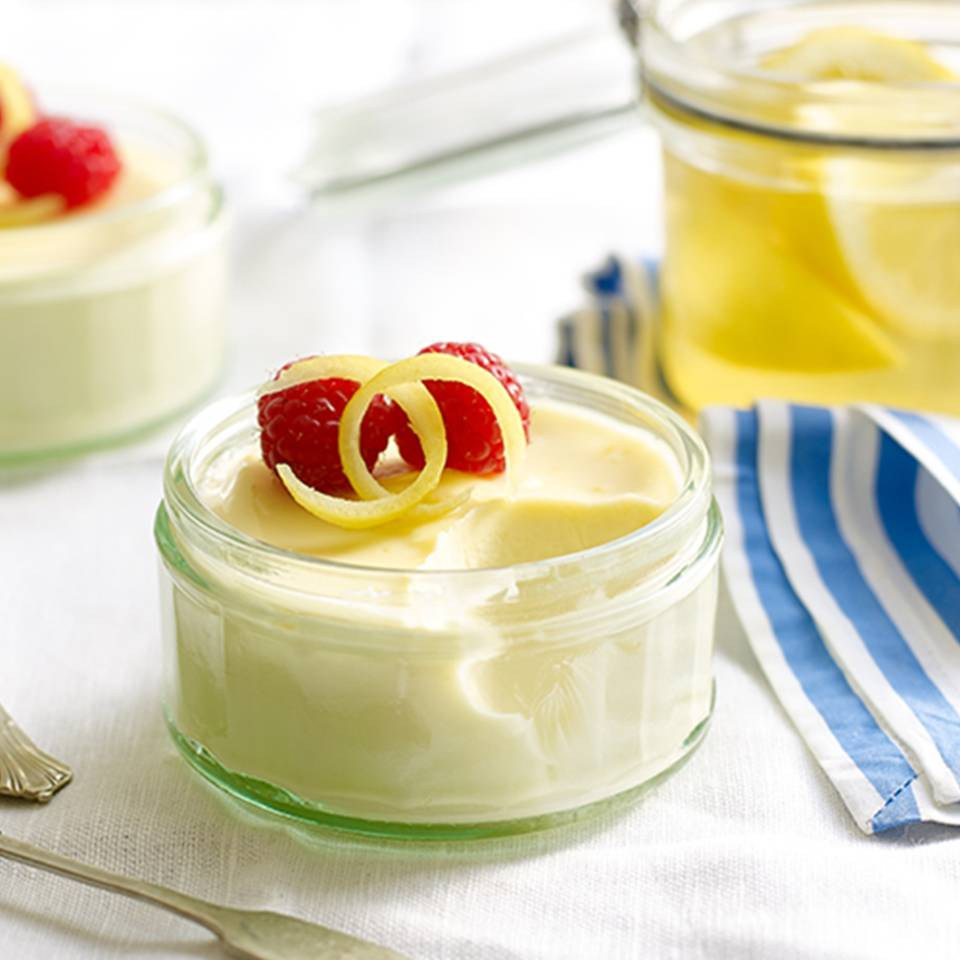
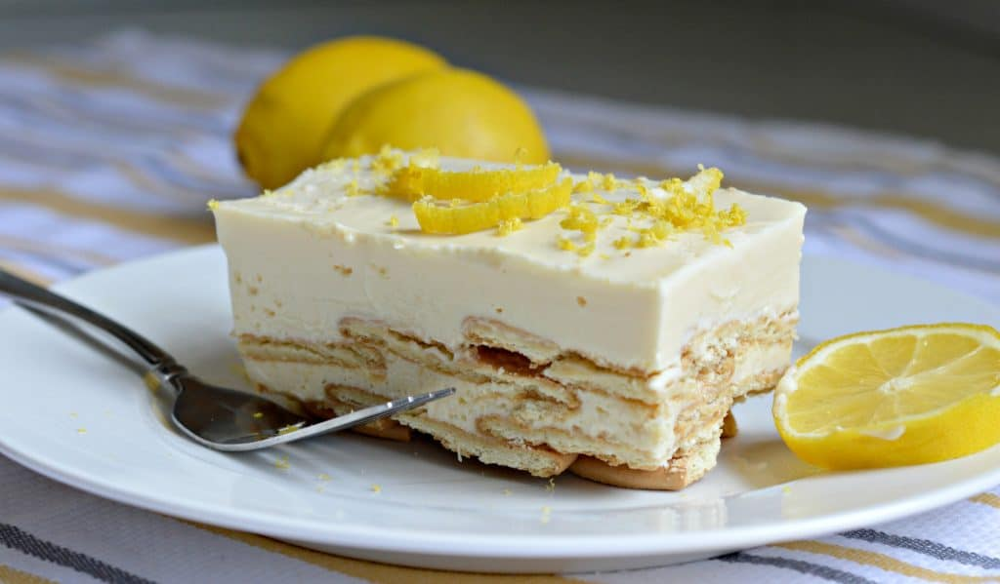
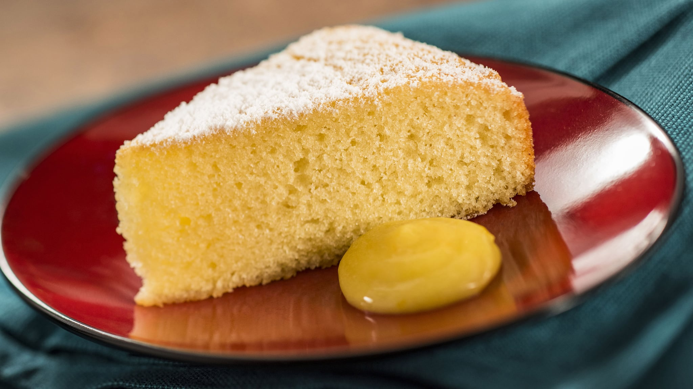

In France, the tarte au citron is a beloved dessert that is enjoyed after long meals. Like the Key Lime Pie, the Tarte au Citron has a buttery crust that holds in the silky filling. The only differences are that the Tarte au Citron uses lemons instead of limes, and uses curd instead of regular pie filling. Curd is thicker than key lime pie filling before it is baked, and when the curd is baked, it forms a skin on the top, while the key lime pie has a uniform texture throughout.
The Lemon Ricotta Cake is a dessert that is native to Naples, Italy. It has a taste similar to cheesecake, and is more dense than Key Lime Pie. Almonds are used to top the cake, giving it a nice pattern.
A legend in Iran once said that a woman used a cake with lemon peels to seduce a man. Whether that legend is factual or not, Iran holds a beautiful citrus dessert that is grand on all levels. The Persian Love Tart includes rose syrup, pistachios, cardamom, and lemon peels for a plethora of flavors. More citrus is also infused in the cake for a more acidic flavor.
England is home to the classic lemon posset, which has a consistency similar to pudding. It is made of lemons, cream, and sugar. One could compare this to the filling of Key Lime Pie, but more stiff and with lemons instead of limes.
Instead of a grand dessert, Mexico offers a sweet that would offer one great comfort. Carlotas are flavored cookies that are layored with a lemon cream. One could compare these to a cake made from lemon flavored Oreos. These sandwich cookies are then frozen until it almost has an ice cream like consistency. The lemon flavor will definitely be noticed, as some recipes call for five lemons!
Whether you eat it at tea time or after dinner, Spain's citrus olive oil cake is a complete hit. While the olive oil may seem very strange, it is actually infused with floral and fruity flavors, giving an extra kick to the cake. Lemons and oranges are often used to flavor the cake, but other citrus fruits can be used (hmm... maybe one could use key limes).
Last but not least is Australia and New Zealand. These two countries share a love for a meringue based dessert, pavlova! Pavlova can incorporate many different fruits such as berries. The citrus comes on with the lemon or lime zest that is used for extra flavor within the meringue. Citrus zest is also used as a fruit topping, creating a flavorable concoction.